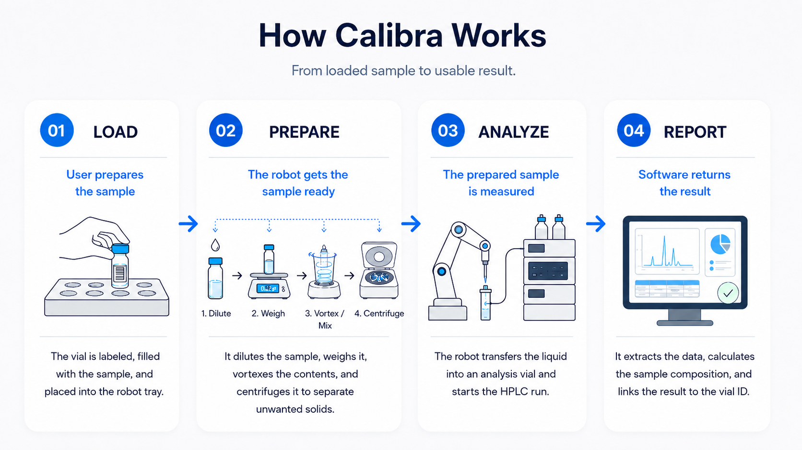
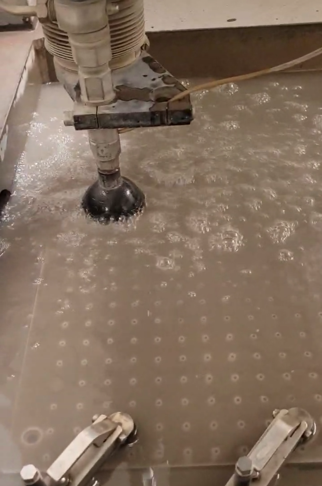
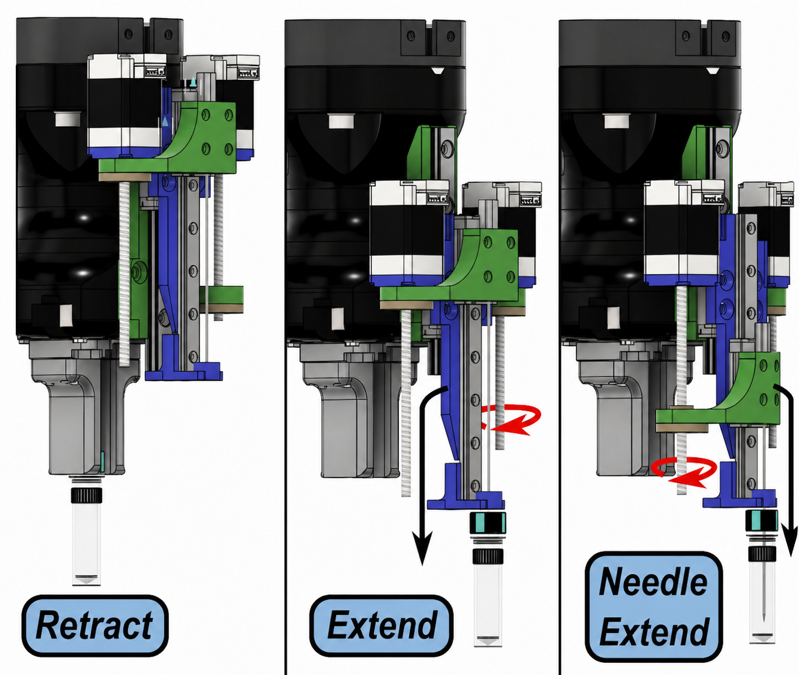
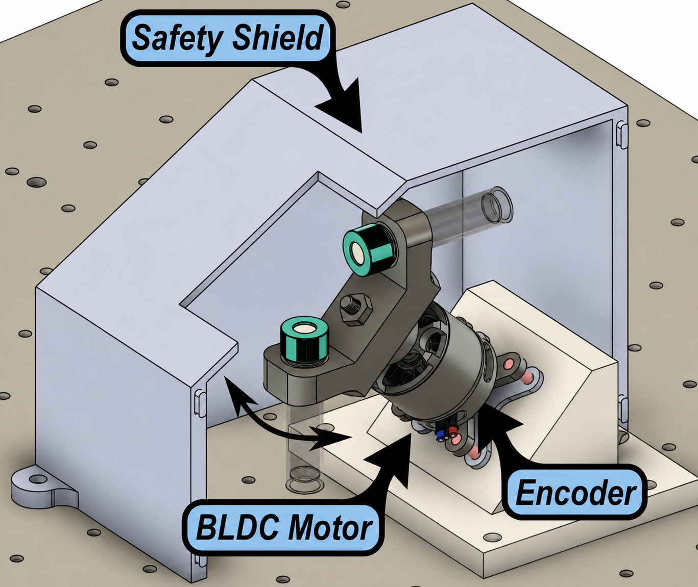
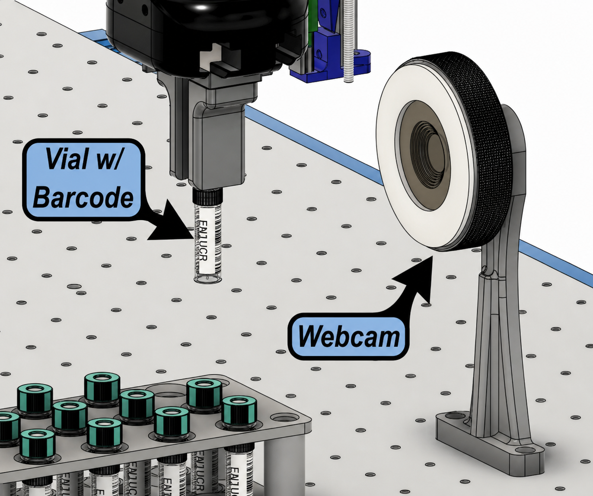
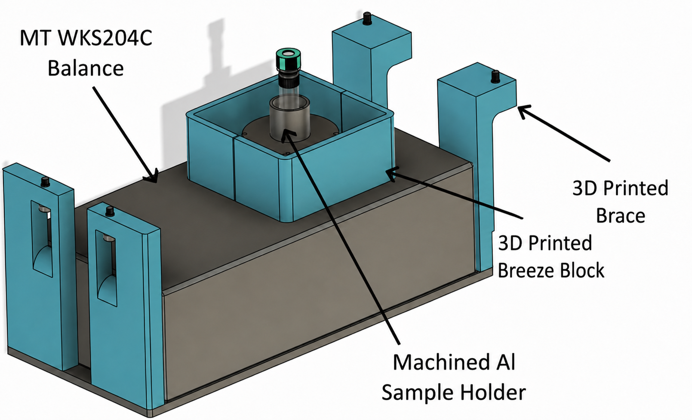
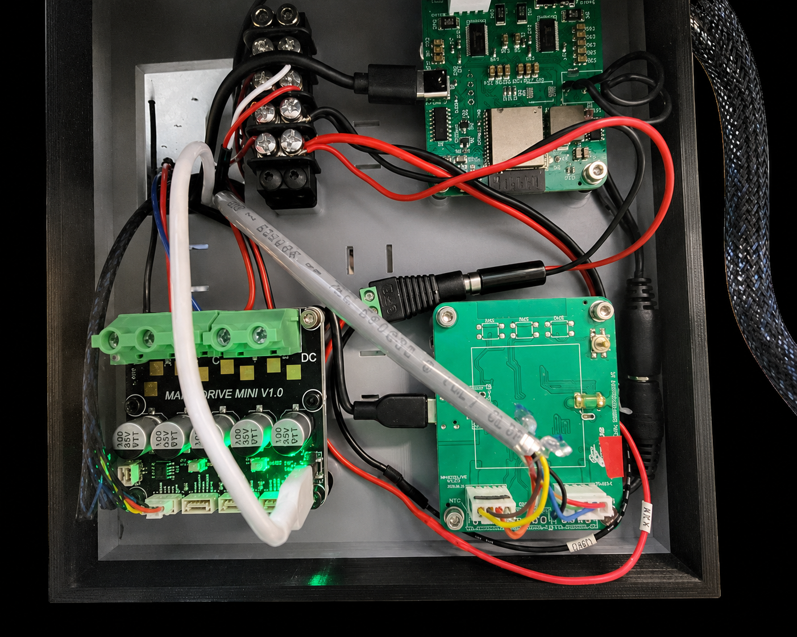
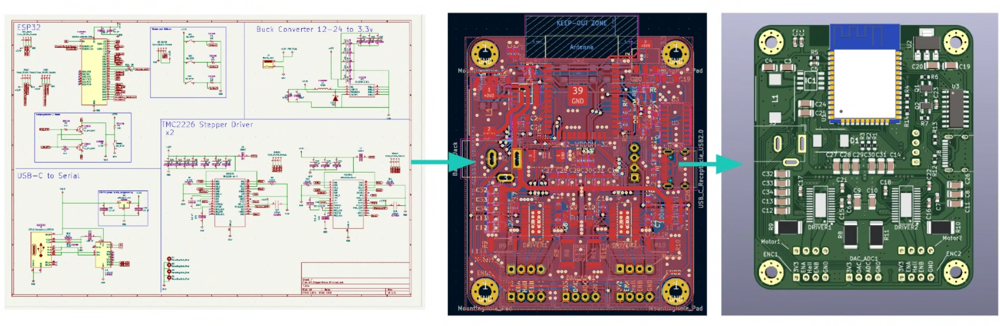
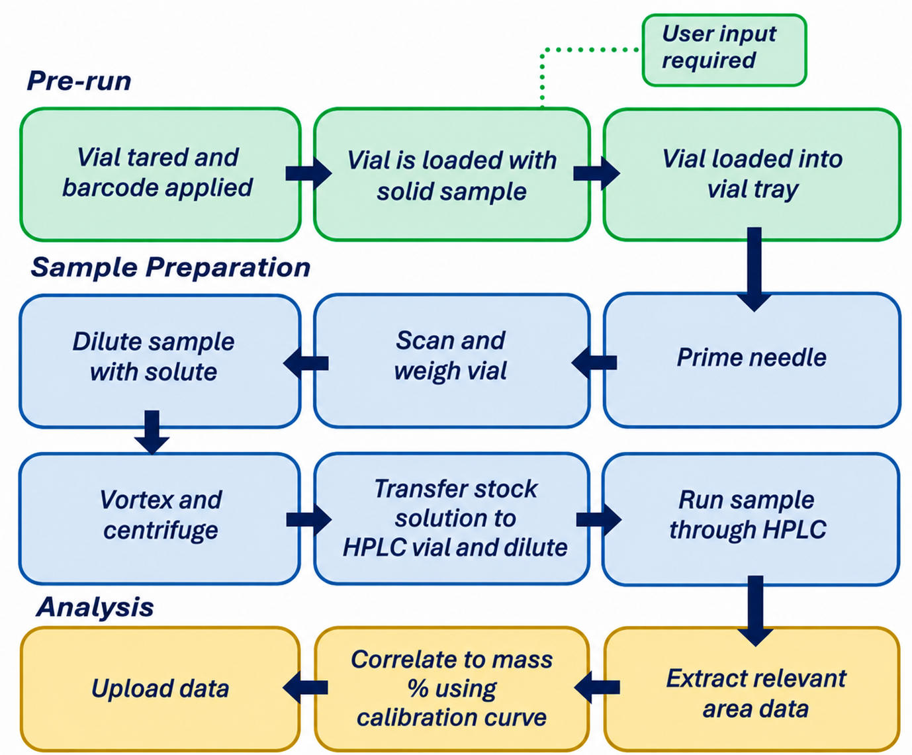
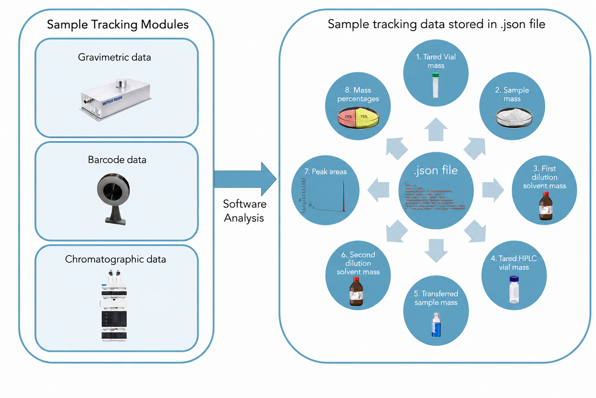

Calibra: Mobile Robotic Drug-Analysis and Quantification Platform
Disclaimer: All images and videos in this section are used with permission from my employer
Why Calibra?
Each year, thousands of people in British Columbia experience overdoses, many linked to an increasingly unpredictable and contaminated drug supply.
Drug-checking services can help reduce this risk by identifying what is actually in a submitted sample, but higher-quality analysis is often limited by the need for time-consuming manual preparation, specialized equipment, and trained personnel.
Developed with support from University of British Columbia and BC provincial health authorities, Calibra addresses this bottleneck by automating sample preparation using a robotic arm,
custom electromechanical modules, smart sample tracking, and plug-and-play Python-based control.
As the project lead of Calibra, I oversaw and spearheaded the electromechanical and software development from conception to working product.
What Calibra Does
Calibra turns a manual drug-analysis workflow into an automated robotic process. After the user labels a vial, adds a sample, and places it into the tray,
the system takes over the repetitive preparation steps: diluting the sample, weighing it, mixing the contents, separating unwanted solids, transferring the prepared liquid, and starting the analysis run.
The prepared sample is measured using HPLC, a lab instrument that separates and detects compounds in a mixture. Once analysis is complete,
the software extracts the measurement data, calculates the sample composition, links the result to the original vial ID, and finally automatically uploads the analyzed data onto our website for users.
The workflow below summarizes the full process from user loading to final result.

Electromechanical Architecture
The figure below shows the components that make up Calibra

Hidden: Syringe pump, electronics enclosure
1-2. Robot and Platform
The first step in building Calibra was integrating the 6-DOF UR3e robotic arm onto a rigid, mobile chassis for deployment at harm-reduction sites. The platform was built from a machined 3/8-inch aluminum plate and heavy-duty Vention extrusions, creating a stable base for the robot and surrounding modules. I designed custom gripper fingers for slip-free vial handling and modeled the full workspace in CAD to optimize robot placement and simulate reachability. After assembly, I validated the robot’s spatial limits using a basic PLC program before finalizing the module layout.

3. Vortexer
The system required an automated mixing module to ensure full dissolution and sample homogeneity. Commercial sonicator baths were considered, but testing showed that changing water levels from evaporation made them unreliable for extended autonomous operation, and lab-grade units cost over $1,500. Instead, I developed a lower-cost vortexing module by modifying a commercial vortexer with a 3D-printed vial mount and linear actuator. After the robot delivers a vial and retracts, the actuator lightly secures the vial, then presses it into the vortexer’s pressure switch to initiate mixing. The actuator is driven by a custom stepper motor driver discussed later.

4. Liquid Handler
The liquid handler was designed to automate precise solvent transfer while avoiding interference with the robot gripper during vial handling. I developed a retractable two-axis mechanism with separate stepper-driven linear actuators for the vial support platform and dispensing needle. After the robot places a vial onto the platform and retracts, the platform extends into position and the needle lowers independently to pierce the septum without disturbing the vial.
The needle is connected through 0.04-inch ID PTFE tubing to a Cavro Xcalibur syringe pump with a 1 mL syringe for controlled liquid dispensing. Both actuators are controlled by a custom ESP32-based stepper driver board using TMC2226 drivers, with firmware that converts Python serial commands into precise stepper movements.

5. Centrifuge
The centrifuge was designed because commercial automation-ready centrifuges were either too expensive, too bulky, or unable to reliably return to a known position for robotic vial pickup. I developed a compact custom 3D-printable centrifuge using a SunnySky X2212 BLDC drone motor, capable of reaching 12,000 rpm and approximately 1610 g of force.
A TLE5012 magnetic encoder provides angular position feedback, allowing the rotor to track speed and return to a defined home position after each run. The motor is controlled by an ODrive BLDC controller and powered by a 24 V supply, giving software-level control over speed, acceleration, rotation count, and PID tuning.
For safety, I designed a 3D-printed enclosure around the high-speed rotor, with a robot-accessible opening for automated vial transfer while reducing risk during operation.

6. Barcode Reader
I developed an electromechanical barcode scanning module that allowed the robot to automatically identify each vial before processing. The system uses a webcam mounted in a custom 3D-printed fixture, positioned so the UR3e can present each vial at a repeatable scanning distance and angle. Once scanned, the barcode is used as the sample ID for the automated workflow, linking robot handling, balance measurements, analysis data, and final concentration calculations to the correct vial. This ensured that physical sample movement and digital data tracking stayed synchronized throughout the system. Later, this system was supplemented with an RFID reader in order to function in low-light settings.

7. Balance
The balance module uses a 0.1 mg Mettler-Toledo WKC204C to tare vials, measure sample mass, and verify solvent delivery after each dispense. To save platform space, I mounted the balance underneath the aluminum deck on custom legs, with a cutout that allows the robot to place vials directly onto the weighing surface.

Custom Stepper PCB & Enclosure
Alongside another engineer, Matt, we designed a custom ESP32-based stepper control PCB in Altium and 3D-printed enclosure to drive Calibra’s actuated modules. The board uses TMC2226 stepper drivers and receives serial commands from Python, allowing the main workflow software to control motions such as needle retraction, vial positioning, and vortexer engagement. The enclosure protected the electronics, organized wiring, and provided secure mounting points for clean integration onto the robot platform.


Software & Firmware
Calibra’s software was structured as a modular Python control system, where each hardware component had its own lower-level control file for tasks such as robot motion, centrifuge operation, liquid handling, balance readings, barcode/RFID scanning, and HPLC interaction. The top-level workflow acted as the orchestrator: instead of directly managing every motion or device command, it called the appropriate module functions in sequence to carry out the full sample-preparation and analysis process shown below. This architecture kept the workflow readable, made each module easier to test independently, and allowed new hardware to be added without rewriting the entire system. The full code can be found at the Calibra GitLab.

1. Robot & Module Control
The robotic arm was first controlled through PLC programs, but then I transitioned the robot control to Python since test engineers reported that PLC programs were not very intuitive. The custom actuated modules, such as the vortexer, liquid handler, and syringe pump, receive serial commands from Python. These commands are interpreted by embedded C++ firmware and converted into actuator movements for actions such as extending the liquid-handler platform, lowering the needle, and engaging the vortexer.
2. Sample Tracking & Data Processing

At the beginning of each run, each vial is assigned both a barcode and RFID tag, giving the system redundant identification in case one method fails. As the vial moves through the workflow, the software links each physical action and measurement to the correct sample ID. In simple terms, the system records what vial is being handled, what material was added, how much liquid was delivered, and what HPLC signal was measured, and these are stored in a central .json file. These values are then used to automatically generate calibration curves or estimate the concentration of unknown samples, and then uploaded onto a central website for users. Full equations and data-processing details are provided in the paper at the end of this page.
3. Analytical Hardware Interface
A major challenge was controlling analytical instruments that were originally designed for manual operation. Early HPLC automation used PyAutoGUI to click through the instrument software, but this was unreliable because it depended on the correct window position, screen state, and image detection. To improve robustness, our team developed pyChemStation, a macro-based interface that communicates with the HPLC software more directly and reduced PyAutoGUI target-detection errors by 98%.
4. ivoryOS GUI Integration
Calibra was integrated into ivoryOS, an open-source orchestrator for self-driving laboratories. ivoryOS automatically generates web interfaces from Python-based lab functions, allowing users to control modules, enter workflow parameters, and build workflows through a low-code interface. For Calibra, this made the system easier to operate without requiring users to directly edit or run Python scripts. For more information, see ivoryOS.
Team Management
As project lead for Calibra, I coordinated a 4-person engineering team working across mechanical design, electronics, firmware, and software integration. I broke the platform into smaller modules, delegated tasks based on each member’s strengths, and tracked progress to keep design, fabrication, and testing milestones on schedule.
I also acted as the communication link between the engineering team and the broader project group. This included presenting 4 major design updates, explaining technical tradeoffs, and incorporating feedback from chemists, senior researchers, and external stakeholders, including government representatives. This helped keep the platform aligned with both the engineering requirements and the larger goal of building an affordable robotic drug-analysis system.
Results
- Successfully completed the Calibra platform on schedule in January 2026.
- Reduced the cost of open-source automation modules, including the centrifuge, vortexer, and liquid handler, with hardware still used in Hein Lab and other labs today.
- Enabled analysis of 1500+ drug samples with 98% overall reliability, helping identify potentially dangerous or laced samples for harm-reduction applications.
- Presented the platform at Accelerate, an international automation conference.
- First-author paper currently under review with Digital Discovery. See the draft below.
Other Stuff
For the full technical paper draft, see the Calibra paper.
For the conference poster, see the Accelerate poster deck.